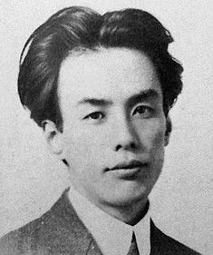
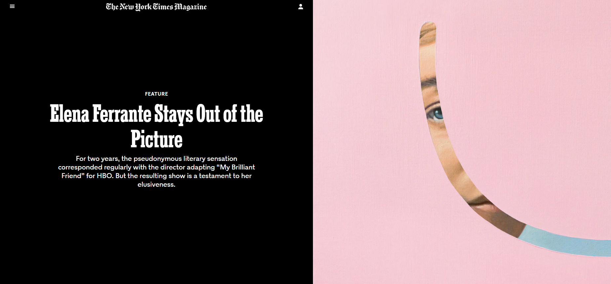

The Merchant and the Alchemist's Gate
Author: Ted Chiang
Originally Published: 2007
The story follows Fuwaad ibn Abbas, a fabric merchant in medieval Baghdad. It begins when he is searching for a gift to give a business associate and happens to discover a new shop in the marketplace. The shop owner, who makes and sells a variety of very interesting items, invites Fuwaad into the back workshop to see a mysterious black stone arch which serves as a gateway into the future, which the shop owner has made by the use of alchemy. Fuwaad is intrigued, and the shop owner tells him three stories of others who have traveled through the gate to meet and have conversation with their future selves. When Fuwaad learns that the shop keeper has another gate in Cairo that will allow people to travel into the past, he makes the journey there to try to rectify a mistake he made twenty years earlier.
And Then There Were None

Author: Agatha Christie
Originally Published: 1939
The story follows 10 strangers who receive an unusual invitation to a solitary mansion based remotely off Britain's Devon Coast. Among the guests is an unstable doctor, an anxious businessman, an irresponsible playboy, and a governess with a secret. Cut off from the outside world, the group arrives at its destination, only to find that darkness awaits them. As people start to mysteriously die, the members of the group realize there is a killer among them.
My Brilliant Friend
Author: Elena Ferrante
Originally Published: 2012
Beginning in the 1950s in a poor but vibrant neighborhood on the outskirts of Naples, Elena Ferrante’s four-volume story spans almost sixty years, as its main characters, the fiery and unforgettable Lila and the bookish narrator, Elena, become women, wives, mothers, and leaders, all the while maintaining a complex and at times conflicted friendship. This first novel in the series follows Lila and Elena from their fateful meeting as ten-year-olds through their school years and adolescence.
Rashômon
Author: Ryūnosuke Akutagawa
Originally Published: 1915
The books contains several short stories including Rashômon. Rashômon recounts the encounter between a servant and an old woman in the dilapidated Rashōmon, the southern gate of the then-ruined city of Kyoto, where unclaimed corpses were sometimes dumped.
Fun News
The TV drama My Brilliant friend has really made the novel known to the world.
The first two episodes were presented at the 75th Venice International Film Festival, in 2018.[3] The first season premiered on HBO on November 18, 2018 and on Rai 1 and TIMvision on November 27, 2018.[4][5] A second season, based on Ferrante's second Neapolitan Novel and titled My Brilliant Friend: The Story of a New Name (Italian: L'amica geniale – Storia del nuovo cognome), was confirmed in December 2018. The eight-episode third season is scheduled to premiere on Rai 1 on February 6, 2022, and on HBO on February 28, 2022.

Elena Ferrante is a woman without a face, whose identity is known only to her Italian publisher, E/O. Her name is a pseudonym, its sound a discreet homage to the great Italian novelist Elsa Morante, author of “Arturo's Island” — whose work, Ferrante says here, she has always appreciated.